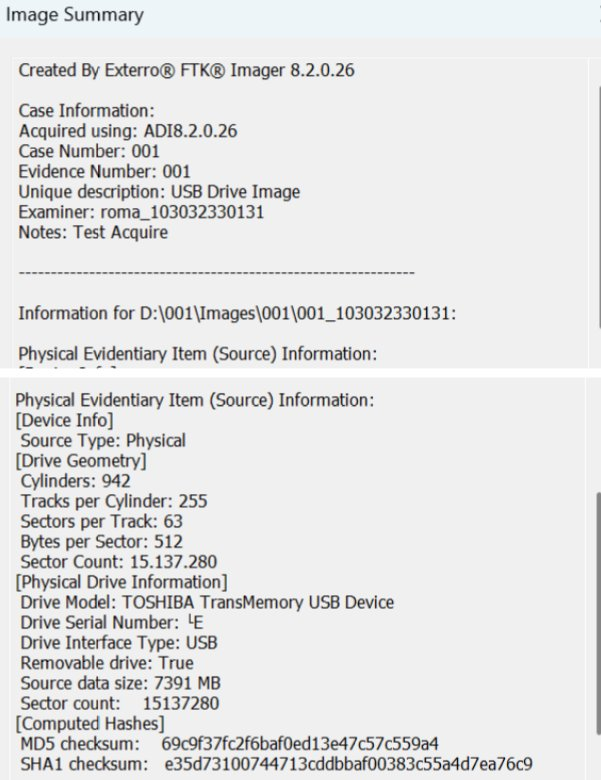
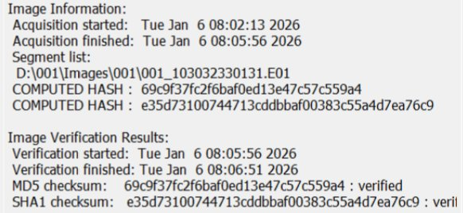
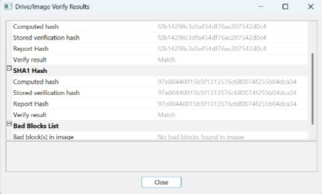
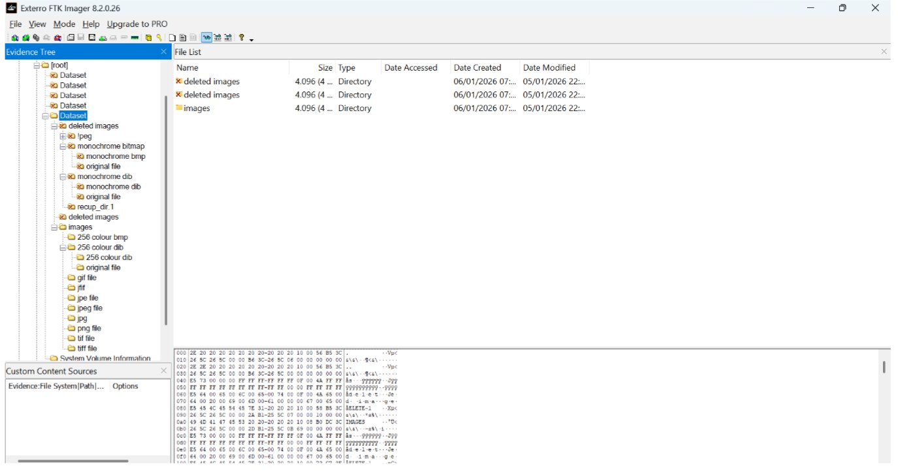
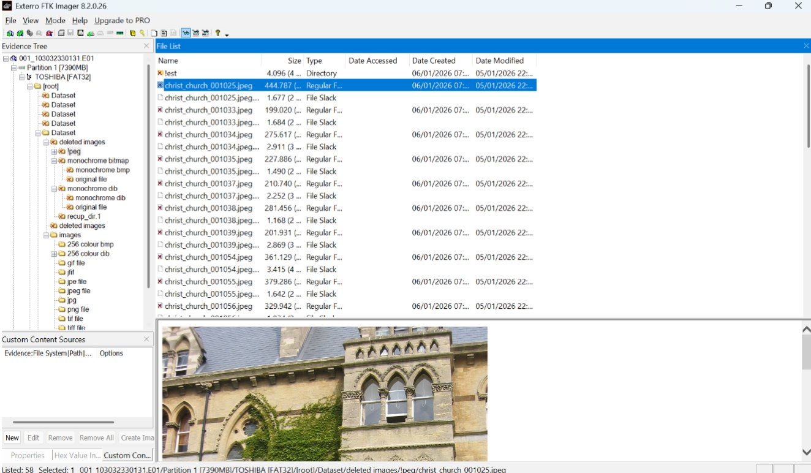

This project involved performing a complete forensic acquisition of a 7.3GB USB drive using Exterro FTK Imager, verifying the integrity of the acquired image through hash matching, and recovering deleted files from unallocated storage space.


After acquisition, FTK Imager re-computed the MD5 and SHA1 hashes of the image and compared them against the stored verification hashes embedded during acquisition. Both checksums matched exactly, and no bad blocks were found in the image, confirming the integrity of the acquired evidence.

The acquired image was loaded into FTK Imager for examination. The evidence tree exposed both the active "images" directory and a "deleted images" directory recovered from unallocated space, containing fragments and recovered files (e.g. monochrome bitmaps, recup_dir entries).

Within the recovered "deleted images" directory, multiple JPEG files were successfully recovered and previewed directly in FTK Imager, confirming successful file recovery from unallocated space.

The forensic acquisition was completed successfully with full chain-of-custody integrity, verified by matching MD5 and SHA1 hashes between the source drive and the acquired image, with zero bad blocks reported. Deleted image files were successfully recovered from unallocated space, demonstrating practical application of forensic imaging and data recovery techniques.